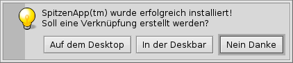
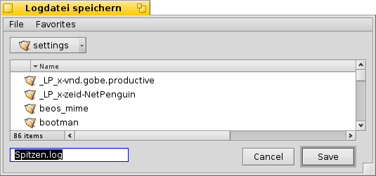
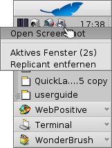

Deutsch
Deutsch Français
Français Italiano
Italiano Русский
Русский Español
Español Svenska
Svenska 日本語
日本語 Українська
Українська 中文 ［中文］
中文 ［中文］ Português
Português Suomi
Suomi Slovenčina
Slovenčina Magyar
Magyar Português (Brazil)
Português (Brazil) English
English Haiku-spezifische Konsolenprogramme
Haiku-spezifische Konsolenprogramme
| Ort: | /boot/System/bin /boot/Allgemein/bin ~/Konfiguration/bin |
Alle Konsolenprogramme, die zusammen mit Haiku installiert werden, befinden sich entweder in /boot/system/bin oder /boot/common/bin. Eigene oder zusätzliche Konsolenprogramme sollten nach ~/config/bin wandern. Diese Orte sind alle Teil der PATH Variable und werden daher automatisch gefunden.
Die folgende Liste an Haiku-spezifischen Programmen ist natürlich nicht vollständig; sie beschreibt nur einige der nützlichsten um auf den Geschmack zu kommen. Es ist empfehlenswert die bin/ Verzeichnisse selbst etwas zu erkunden. Wird ein Konsolenprogramm mit dem Parameter --help aufgerufen, wird der Gebrauch des Befehls mit sämtlichen Optionen angezeigt.
 Attribute betreffend: listattr, catattr, addattr, rmattr, copyattr
Attribute betreffend: listattr, catattr, addattr, rmattr, copyattr
Diese Befehle werden benutzt, um Attribute einer Datei aufzulisten, anzuzeigen, hinzuzufügen, zu entfernen und zu kopieren. Diese Metadaten werden momentan nur auf BFS formatierten Medien unterstützt. Schiebt man die Dateien auf andere Dateisysteme, gehen alle Attribute verloren!
All diese Befehle sind im Kapitel Attribute im Terminal beschrieben.
Index betreffend: lsindex, mkindex, reindex, rmindex
Mit diesen Befehlen lassen sich Attribute in BFS' Index auflisten, hinzufügen, re-indizieren und entfernen. Werden Dateien zwischen Partitionen ausgetauscht, sollte man daran denken, dass jede Partition ihren eigenen Index hat.
Die Befehle sind im Kapitel Index beschrieben.
Nützliche Skript-Befehle
Hier einige Konsolenprogramme, die besonders beim Skripten interessant sind (siehe auch Bash und Skripten).
alert | alert erzeugt das typische Hinweis-Fenster mit einem vordefinierten Symbol, erklärenden Text und bis zu drei Buttons. Als Rückgabewert dient der Titel des geklickten Buttons, bzw. ein Exitstatus, beginnend mit 0). Zum Beispiel: alert --idea "SpitzenApp(tm) wurde erfolgreich installiert! Soll eine Verknüpfung erstellt werden?" "Auf dem Desktop" "In der Deskbar" "Nein Danke"  | |
filepanel | filepanel öffnet einen Öffnen- oder Speicher-Dialog, in dem der Benutzer eine Datei oder Verzeichnis auswählen kann. Der Rückgabewert ist der gewählte Datei- oder Ordnerpfad. Es stehen diverse Parameter zur Verfügung, um beispielsweise einen Startordner oder einen Fenstertitel zu setzen, oder einen Dateinamen beim Speichern vorzugeben oder erlaubte Dateitypen einzuschränken. Zum Beispiel: filepanel -s -t "Logdatei speichern" -d ~/config/settings -n Spitzen.log  | |
waitfor | Mittels waitfor lässt sich auf den Start bzw. die Beendigung eines bestimmten Threads oder einer Anwendung warten. | |
query | query ist die Konsolen-Variante des Find Panels. Um eine Suchformel bequem zu generieren lässt sich übrigens sehr gut eben dieses Find Panel benutzen: Einfach dort die entsprechende Suche zusammenklicken, dann umschalten zum "" Mode, Anführungszeichen (") an Anfang und Ende und anschließend das Ganze hinter den query Befehl ins Terminal oder Skript einfügen. |
Weitere Befehle
checkfs | checkfs ist ein wichtiges Tool um das Dateisystem zu überprüfen. Es wird einfach ein Partitions- oder Gerätename übergeben, um dort jede Datei durchzusehen und Inkonsistenzen zu beheben, sofern möglich. | |
open | open ist ein nützliches kleines Tool. Es öffnet jedwede Datei mit ihrer bevorzugten Anwendung oder startet eine bestimmte Anwendung anhand ihrer Signatur ohne ihren genauen Pfad kennen zu müssen. Das funktioniert auch mit URLs und sogar den "virtuellen" Verzeichnissen, . für das aktuelle Verzeichnis und .. für das übergeordnete, die dann im Tracker geöffnet werden. | |
desklink | Mit desklink kann im Deskbar Tray ein Icon für jedwede Datei, Ordner, Query oder Anwendung installiert werden. Dabei gibt es die Möglichkeit bei einem Rechtsklick auf das entsprechende Icon ein Kontextmenü mit besonderen Funktionen anzubieten. Folgendes Beispiel macht das mit dem Konsolenprogramm screenshot (das "\" in der ersten Zeile dient nur einem Zeilenumbruch im Terminal): desklink "cmd=Aktives Fenster (2s):/bin/screenshot --window --border --delay 2" \ "cmd=Replicant entfernen:desklink --remove=screenshot" /bin/screenshot  |